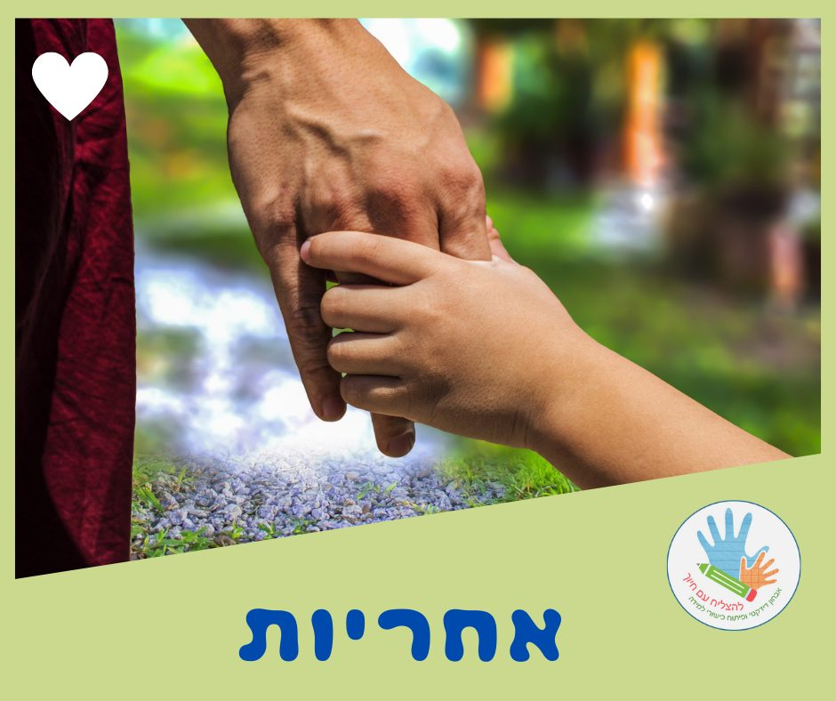

אחריות

#אחריות - ערך מוסרי, שמשמעותו היא שהאדם בהיותו בוגר, נושא בתוצאות של מעשיו ופעולותיו שלו כלפי עצמו וכלפי חברתו וסביבתו, אם הוא בחר בהם מרצונו החופשי.
אחריות היא ערך חיובי, הקשורה קשר הדוק בחירות הפרט ובאושרו.
תפקיד ההורים והמחנכים מתמצה במתן אפשרות לצעיר לרכוש ידע ריאלי כדי להסתגל למציאות ולהשתלב בה.
(מתוך ויקיפדיה)
"צריך שניים לטנגו" 🕺💃
מעבר לאחריות הברורה שלי,
שהיא ללמד ולסייע לתלמידים להשתפר בתחומי הקושי שלהם,
יש אחריות גם להורים -
לתמוך בתהליך הלמידה,
להגיע בזמן ובאופן עקבי ורציף,
ולהמשיך לתרגל עם הילד לפי הצורך.
אחת המטרות החשובות בעיני היא -
#להעביר_את_אחריות_הלמידה_ללומד.
גם כאן מדובר בתהליך,
לתת 'קביים' - תיווך, כרטיסיות ניווט, הכוונה והסבר
ובהדרגה 'לגמול'.
להפנות את השאלות אליהם חזרה,
פחות "להכניס את התשובות לפה"
ולתת מקום להתנסות אישית (הצלחה או כישלון)
ולמידה מטעויות.
העברת אחריות פירושה שאנחנו סומכים עליהם.
כך הם יוכלו לפתח אסטרטגיות משל עצמם,
להיות עצמאיים יותר בלמידה ופחות תלויים בנו.